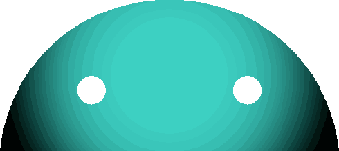

CrabOS
CrabOS "Starman" is a fork of LineageOS
With modifications such as:
Automatic GPU and CPU Governing: Optimizes battery life by adjusting hardware performance based on usage.
Integrated KernelSU Next: Provides advanced system modifications with root-level access for greater customization.
NikGapps: Seamlessly integrates Google apps while maintaining a minimalistic and privacy-focused system.